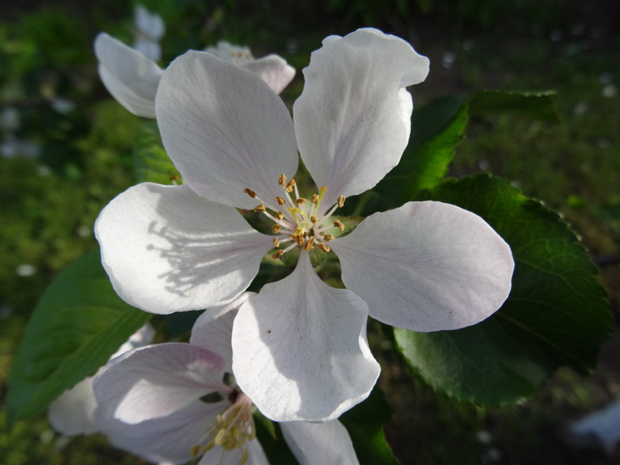

Розовые - Rosaceae 8/27/06—9/5/21

Айвочка прекрасная - Chaenomeles speciosa
15 images

Боярышник вееровидный - Crataegus flabellata
4 images

Боярышник золотистоплодный - Crataegus chrysocarpa
7 images

Боярышник однопестичный - Crataegus monogyna
23 images

Боярышник сглаженный - Crataegus laevigata
5 images

Боярышникорябина x Мичурина - Crataegosorbus x miczurini
13 images

Вишня кислая - Prunus cerasus
78 images

Вишня птичья, Черешня - Prunus avium
14 images

Вишня Саржента - Prunus sargentii
7 images

Вишнячерёмуха x Мичурина - Cerapadus x miczurini
4 images

Груша обыкновенная - Pyrus communis
12 images

Ежевика кустистая - Rubus fruticosus
4 images

Ежевика кустистая пурпурная форма - Rubus fruticosus f. purpurea
16 images

Ежевика кустистая розовая форма - Rubus fruticosus f. rosea
23 images

Ежевика несская, Куманика - Rubus nessensis
3 images

Ежевика островная - Rubus insularis
14 images

Ежевика разрезная - Rubus laciniatus
18 images

Ежевика сизая - Rubus caesius
39 images

Ирга гладкая - Amelanchier laevis
7 images

Ирга овальная - Amelanchier ovalis
103 images
Керрия японская - Kerria japonica
4 images
Кизильник Дамнера - Cotoneaster dammeri
7 images
Кизильник огненный - Cotoneaster ignavus
3 images
Кизильник черный - Cotoneaster melanocarpus
42 images
Лавровишня каролинская - Prunus caroliniana
5 images
Лавровишня лекарственная - Laurocerasus officinalis
12 images
Лапчатка маньчжурская - Potentilla glabra var. mandshurica
7 images
Лапчатка оголённая - Potentilla glabrata
7 images
Малина западная - Rubus occidentalis
11 images
Малина Кокбурна - Rubus cockburnianus
11 images
Малина обыкновенная - Rubus idaeus
71 images
Малина обыкновенная ф. жёлтая - Rubus idaeus f. chlorocarpus
8 images
Малиноклен душистый - Rubus odoratus
37 images
Малиноклен мелкоцветковый - Rubus parviflorus
13 images
Миндаль Петунникова - Prunus petunnikowii
9 images
Мушмула германская - Mespilus germanica
18 images
Мушмула японская - Eriobotrya japonica
3 images
Персик обыкновенный - Persica vulgaris
2 images
Пираканта ярко-красная - Pyracantha coccinea
7 images
Пузыреплодник головчатый - Physocarpus capitatus
4 images
Пятилистник кустарниковый - Dasiphora fruticosa
18 images
Пятилистник кустарниковый белая форма - Dasiphora fruticosa f. alba
1 image
Пятилистник кустарниковый розовая форма - Dasiphora fruticosa f. rosea
4 images
Рафиолепис зонтичный - Rhaphiolepis umbellata
2 images
Рябина x финская - Sorbus x finlandese
13 images
Рябина x широколистная - Sorbus x latifolia
3 images
Рябина американская - Sorbus americana
11 images
Рябина амурская - Sorbus amurensis
11 images
Рябина бузинолистная - Sorbus sambucifolia
12 images
Рябина Кёне - Sorbus koehneana
6 images
Рябина круглолистная - Sorbus aria
7 images
Рябина нарядная - Sorbus decora
8 images
Рябина обыкновенная - Sorbus aucuparia
54 images
Рябина приземистая - Sorbus chamaemespilus
5 images
Рябина смешанная - Sorbus commixta
5 images
Рябина урсина - Sorbus ursina
4 images
Рябина черноплодная - Aronia melanocarpa
63 images
Сибирка алтайская - Sibiraea altaiensis
10 images
Слива вишненосная, Алыча - Prunus cerasifera
5 images
Слива домашняя - Prunus domestica
37 images
Слива карликовая разнов. стелющаяся - Prunus pumila var. depressa
4 images
Слива колючая, Тёрн - Prunus spinosa
13 images
Спирея дубровколистная - Spiraea chamaedrifolia
8 images
Спирея иволистная - Spiraea salicifolia
1 image
Спирея японская - Spiraea japonica
5 images
Стефанандра надрезаннолистная - Stephanandra incisa
8 images
Стефанандра Танаки - Stephanandra tanakae
8 images
Хеномелес x Вильморена 'Ведрараская' - Chaenomeles х vilmoriniana 'Vedrariensis'
6 images
Черёмуха Маака - Prunus maackii
34 images
Черемуха обыкновенная - Prunus padus
91 images
Шиповник американский - Rosa blanda
3 images
Шиповник ампельный - Rosa sp
13 images
Шиповник бедренцелистный - Rosa pimpinellifolia
8 images
Шиповник блестящий - Rosa nitida
10 images
Шиповник болотный - Rosa palustris
7 images
Шиповник виргинский - Rosa virginiana
6 images
Шиповник голубовато-серый - Rosa caesia
7 images
Шиповник голубовато-серый подв. сизый - Rosa caesia subsp. glauca
8 images
Шиповник Звегинцова - Rosa sweginzowii
8 images
Шиповник каролинский разн. крупноцветковый - Rosa carolina var. grandiflora
9 images
Шиповник майский - Rosa majalis
215 images
Шиповник морщинистый 'Васагейминг' - Rosa rugosa 'Wasagaming'
3 images
Шиповник морщинистый - Rosa rugosa
49 images
Шиповник морщинистый белая форма - Rosa rugosa f. alba
5 images
Шиповник мягкий - Rosa micrantha
4 images
Шиповник повислый - Rosa pendulina
4 images
Шиповник почти-собачий - Rosa subcanina
5 images
Шиповник сизый - Rosa glauca
18 images
Шиповник собачий 'Беззащитный' - Rosa canina 'Inermis'
10 images
Шиповник собачий - Rosa canina
22 images
Шиповник турецкий - Rosa turcica
5 images
Шиповник щитконосный - Rosa corymbifera
16 images
Экзохорда крупноцветная - Exochorda x macrantha
4 images
Эксохорда пильчатолистная - Exochorda serratifolia
5 images
Яблоня 'СШ' - Malus 'US'
2 images
Яблоня 'Тина' - Malus toringo subsp. sargentii 'Tina'
3 images
Яблоня x 'Высочество' - Malus x adstringens 'Royalty'
2 images
Яблоня x 'Джон Дауни' - Malus x sylvestris 'John Downie'
6 images
Яблоня x 'Красное Изобилие' - Malus x adstringens 'Red Splendor'
4 images
Яблоня x 'Лизет' - Malus x 'Liset'
4 images
Яблоня x домашняя - Malus x domestica
98 images
Яблоня x красивая - Malus x gloriosa
2 images
Яблоня x пурпурная - Malus x atrosanguinea
3 images
Яблоня лесная - Malus sylvestris
4 images
Яблоня обильноцветущая - Malus floribunda
6 images
Яблоня сливолистная - Malus prunifolia
11 images
Яблоня ягодная - Malus rockii
13 images



Розовые - Rosaceae